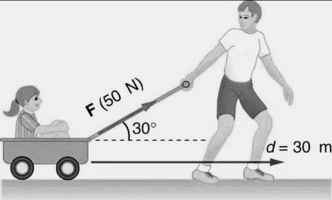

Physics
Concept of Work
First Published: | Last Modified:
Learning Objectives
After completing this chapter, you will be able to
- define work amd state it unit;
- you will be able to distinguish between work in a layman view and a physicist view;
- understand the different quabtities in calculating work and derive many formula in calculating work done;
- calculate and undertake problems on workdone;
- distinguish between the types of work;
Mini Glossary
- displacement
- is the distance covered in a specific direction e.g 50 metres North
- force
- It is an influence that causes motion of an object, an object to stop moving (Newton 1st law) or caused deformation of an object (e.g elasticity)
- Kinetic energy
- is the energy posses by a body by reason of motion.
K.E = ½mv2
Introduction
Where do you wish to work, at the hospital as a nurse, a school as a teacher or a cyber café as a computer operator? From this, work could be known as a paid job.
Work in physics is completely different from this. Work could also be defined as an activity that requires physical or mental effort. This actually is connected with physics definition for work but slightly different.
A man who breaks rock at the quarry has done work which requires more of physical effort as it requires more energy from the hand muscles than the brain. While a woman working on the computer in an office has done work which requires mental effort because the work demand more energy from the brain than the remaining part of the body.
From the above example, according to physics definition for work, the man at the quarry has done work as he exert a force on the rock breaker. While the woman at the computer has done no work except from tapping the keyboard and moving the mouse around. "But she had been on the chair all day trying to sort some documents out and yet you say she has done no work" I complained. But work in physics is actually connected with movement. Work in physics doesn't demand for salaries and wages. So let unravel the mystery behind work.
Work in physics
Work is said to be done when a force moves it point of application through a certain distance in the direction of the force. In short, work is the energy transferred to an object when a force causes an object to move in the direction of the applied force.
Explanation: When a force is applied on an object, it causes the object to move, in this process, the object gains kinetic energy.
When a force does not cause the object or point of application to move, the force have done no work for example a man pushing a wall. But if the direction of the force is opposite to the displacement of the object, the work done by the force is negative, for example, when a stone is thrown upward, it moves in the opposite direction to the force of gravity which acts downward.

Formulae of Work done
Work done is also defined as the product of force applied and the distance moved by the object in the direction of the force. That is,
Workdone= Force × Distance
W = F × D
The S.I unit of force is Newton denoted by N. The unit of Newton which is also a unit of energy is named after one of the greatest physicist, Issac Newton.
The unit of distance is metres m, centimetres cm, kilometres km, feet ft, miles and many more. But the S.I unit of distance are metres m. Therefore, before you solve calculations on work done, check if the units are represented in their S.I unit, and if they are not, convert them to their respective S.I units.
S.I unit
also System International of Units. The S.I unit are the internationally accepted units of all scientific measurements. They are also units recommended for making calculations.The S.I unit of work done is Joules J named after the English physicist, James Prescott Joules. Joules is also a unit of energy, but remember Work done is the energy transferred when a forces causes an object to move in the direction of the applied force. Other non S.I unit of work is Newton metre Nm, but it was discouraged by the S.I authority as it is a unit of torque. Therefore, one Joule is the work done by one Newton of force displacing a body through one metre.
Work and Gravity
When a body moves upward or downward, work is done by the force of gravity. Thus, work done by or against gravity is called Gravitational Work
Force of Gravity
also known as Gravitational Force is the force that attract any two bodies on the earth. This force is what attract every body toward the center of the earth. For example, when you jump, you will always find yourself back on the ground, this is as a result of the effect of gravitational force or pull acting on your body.When a body is lifted upward, work is done against weight, thus, work is done against the force of gravity (negative work). But when a body falls downward work is done by the gravitational forced (positive work).
Gravitional Work (W) = Force × height
You should know that
Force = Weight = mass × acceleration due to gravity
F = mg
∴ Work = mass × acceleration due to gravity × height
W = mgh
Weight and Mass
is,often confused with mass. On earth, your weight increases with increasing mass, but in space your weight will be 0 (zero) despite an increase or decrease in mass.
You can say weight of a body is the force needed to be overcome to move the body. For example, for you to push a table of 100 Newton, you must exert a force greater than weight of the table to move it.
In space, you can move your body freely as a result of zero gravity. But at the earth poles (extreme end of the earth) , you weigh more, so you require more force than you usually to push an object.
Height, Distance and Length
Height is the measurement of an object in vertical direction e.g measuring a tree length. Distance is the measurement of an object in an horizontal direction e.g measuring the length of a road. Length is the interval between two points, whether vertically or horizontally.Acceleration due to gravity
Acceleration due to gravity = 9.8m/s2 - 10m/s2 depending on location on earth.
If an object falls downward, the acceleration of the object will be an average of 9.8m/s2, therefore the velocity of the object will increase by an average of 9.8 metre per second in each second (that is 32 feet in a second).
But if an object is thrown upward, the velocity will decrease by an average of 9.8 metres per second in each second until it reaches 0 (zero), at this point, the object begin to drop down and it velocity will begin to increase.
Calculations on Work
Example 1
A boy moving a trolley with a force of 6 newton through a distancef 320cm. Find the work done by the boy.
Solution
Write out the parameters
Force = 6N, distance = 320cm
centimetre (cm) is not the S.I unit of distance, therefore, convert it to metres
10cm = 1dm;
10dm = 1m;
∴ 100cm = 1m
If 100cm = 1m;
Divide through by 100
1cm = 1/100m;
Multiply through by 320
320cm = 320 × (1/100)m
= 320/100m
= 3.2m
Rewrite the parameters
Force = 6N; distance = 3.2m
Write out the formulae
Work done = Force × Distance
Substitute, then solve
Work done = 6N × 3.2m
= 19.2 Joules
Writing parameters
Writing parameters should a usual habit of yours before making calculations. Writing parameters will save you from not forgetting any details when making calculations. Parameters will help you to check if the quanties are expressed in their S.I unit.
Example 2
A man whose mass is 80kg climbs a staircase of height 3 metres. Calculate the work done. (g = 10m/s2)
Solution
Write out the parameters
mass(m) = 80kg;
height(h) = 3.0m;
acceleration due to gravity(g) = 10m/s2
Since the quantities are expressed with their S.I unit
Work = mass × acceleration due to gravity × height
W = mgh
Substitute, then solve
W = 80 x 10 x 3
= 2400 Joules
Example 3
A stone of mass 25kg fall from a cliff of 25m height. Calculate the following
- weight
- Gravitational force
Solution
m = 25kg; h = 25m; g = 9.8m/s2
(i)
weight = mass × acceleration due to gravity
weight = mg
weight = 25 × 9.8 = 245N
(ii)
Gravitational work = mgh
= force × distance
since force = weight
Work = 245 × 25 = 6,125 Joules
Work done by a Force Inclined at an angle
The child pushing his toy car with a force inclined at an angle to the horizontal displacement or direction of the his toy car.
When a force is inclined at an angle θ to the object displacement
Work done = Force × Distance × cosineθ;
Gravitational work = mgh•cosθ
Example 4
Calculate at the work done by a force of 100N inclined at an angle of 60° to an object dragged horizontally to a distance of 8m.
Solution
F = 100N; d = 8m; θ = 60°
W = F X d X cosθ
W = 100 x 80 x cos 60; cos 60° = 0.5;
W = 800 x 0.5 = 400 Joules
Types of Work
Arrow illustration of positive and negative work
There are three types of work; they are positive work, negative work and zero work.
- Positive work
- If you steer your bicycle towards the right, and your bicycle moves right, you have actually done positive work because the bicycle acts in the direction of your force.
- Positive work is said to be done when the object or point of application moves exactly in the same direction of the force. The definition of positive work is equal to that of work itself.
- For work to be positive, the angle between the direction of force and displacement of object must be less than 90°. A practical example of positive work is the work done by gravitational force on an object moving downward. The work done by the gravitational force is positive because it acts downward, so did the object do too.
- Negative work
- Imagine steering your bicycle to the right, but somehow steered towards the left! You have done a negative work.A negative work is said to be done when the force moves it of point of application moves in the opposite direction to the applied force. This could be caused when two or more force acts on the body.
- For work to be negative, the angle between the direction of applied force and the displacement of object must be greater than 90°.
-
A practical example of this is when a load is dragged along a rough surface. The force that drags it does a positive work once it can overcome the frictional force. The frictional force in turns does a negative work when the dragging force overcomes it.
NB: Frictional force is a force that opposes motion. - Another example of negative work is the work done by the gravitational force when an object is thrown upward. Since the force of gravity acts downward, it does a negative work on the rising ball, while the throwing force does a positive work. You can see that we were able to deduct positive and negative work from the two examples given.
- Zero Work
- This time, you steer your bicycle towards the right, but it didn't move towards the right, instead it kept on moving straight, you have done zero work.
- Zero work is said to be done when a force is applied on an object but the object does not move. In this case, the object seems not to be affected by the force. A man pushing a wall has done no work as far as the wall does not move. In this case, the man has failed to transfer his energy to the wall.
- Zero work can be properly defined as the work done when the force is perpendicular to the displacement of the object (that is, the angle between the displacenent of the object and the direction of the force is exactly 90°)
Summary
- What is gravitational force?
- Convert 32 feets to the S.I unit of length. (1ft = 0.30 metres)
- What is torque?
- Calculate the work done by a man pulling a trolley of 50N through 30m inclined at an angle of 30° to the horizontal. 
- Let discuss about Issac Newton, his achievement and the application of his theories in today's world.